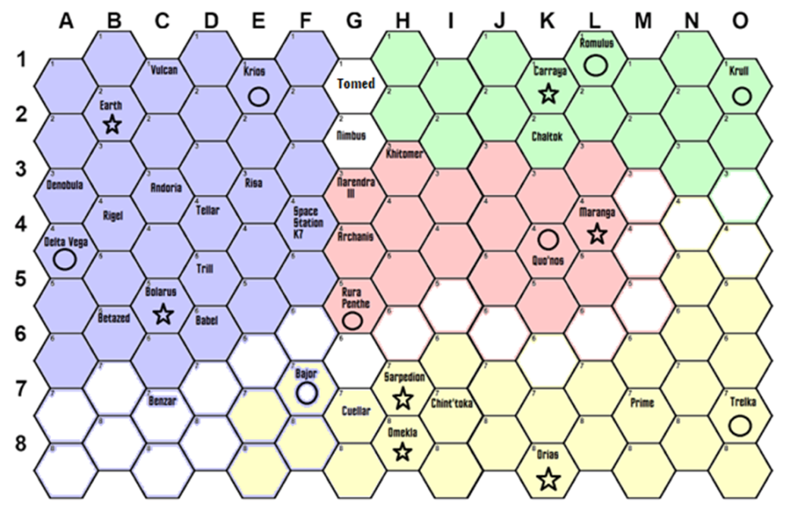

United Federation of Planets
Oberth-class Scout
Souyz-class Research Cruiser
Constitution Refit-class Heavy Cruiser
Constellation-class Star Cruiser
Excelsior-class Transwarp Battleship
Alamo-class Defense Outpost
R1-class Space Station
Earth Spacedock
Scorpion-class Corvette
Klingon Empire
K-22 B'rel-class Scout (Bird of Prey)
D-14 Stinger-class Destroyer
D-32 K'vort-class Light Cruiser (Bird of Prey)
D-7M K'tinga-class Heavy Cruiser
L-24 Ever Victorious-class Battlecruiser
D-33 Tsunami-class Battleship
Z-4 Deathgame-class Space Station
Romulan Star Empire
V-9 Night Flyer-class Scout
V-7 Whitewind-class Destroyer
V-30 Winged Defender-class Light Cruiser
V-33 Thunderbird-class Heavy Cruiser
Z-1 Nova-class Battlecruiser
F-2 Nestar-class Starbase Facility
X-3 Aviary-class Defense Outpost
V-6 Gallant Wing-class Light Cruiser (Retired)
Cardassian Union
Hideki-class Scout
Galor-class Destroyer
Keldon-class Cruiser
Legate-class Dreadnought
Orbital Weapons Platforms
Nor-class Space Station

| Factory | Points per turn |
| Delta Vega | 2 |
| Krios | 2 |
| Quo'nos | 1 |
| Rura Penthe | 2 |
| Romulus | 2 |
| Krull | 2 |
| Trelka | 3 |
| Bajor | 1 |
Almatha Sector = G8
United Federation of Planets - Initial Fleet Deployments
| Fleet | Composition | Location |
| 1st | 1x Excelsior, 1x Constellation, 1x Constitution | Deep Space Station K7 (F4) |
| 2nd | 1x Excelsior, 1x Constitution, 1x Souyz | Earth (B2) |
| 3rd | 1x Constitution, 2x Souyz | Sector F3 |
| 4th | 1x Constellation, 2x Souyz | Sector F5 |
| 5th | 1x Constitution, 2x Souyz | Krios (E1) |
| 6th | 1x Constitution, 2x Souyz, 1x Oberth | Bolarus (C5) |
| 7th | 1x Constitution, 2x Souyz | Sector F2 |
| Assorted | 2x Oberth | Delta Vega (A4) |
| 1x Souyz | Sector F1 | |
| 1x Constellation | Sector E5 |
Additional Assignment
Klingon Empire - Initial Fleet Deployments
| Fleet | Composition | Location |
| TF Alpha | 1x Tsunami, 1x L-24, 2x D7M | Khitomer (H3) |
| TF Beta | 1x L-24, 1x D32, 2x D7M | Quo'nos (K4) |
| TF Gamma | 2x D32, 3x K22 | Sector K5 |
| TF Delta | 1x D32, 3x K22 | Sector J3 |
| TF Epsilon | 1x D32, 2x K22 | Rura Penthe (G5) |
| Assorted | 1x D32, 1x D-14 | Maranga (L4) |
| 1x D7M | Narendra III (G3) | |
| 1x K22 | Archanis (G4) |
Additional Assignment
Romulan Star Empire - Initial Fleet Deployments
| Fleet | Composition | Location |
| BG-A | 1x Z1, 2x V33, 2x V30 | Sector I1 |
| BG-B | 1x X1, 2x V30, 1x V7 | Romulus (L1) |
| BG-C | 1x V33, 1x V30, 1x V7 | Krull (O1) |
| BG-D | 1x V33, 1x V30, 1x V7 | Carraya (K1) |
| BG-E | 1x V30, 1x V7 | Chaltok (K2) |
| BG-F | 1x V30, 1x V7 | Sector M2 |
| Assorted | 2x V-9 | Sector H1 |
| 2x V-9, 1x V-6 | Sector H2 |
Additional Assignment
Cardassian Union - Initial Fleet Deployments
| Fleet | Composition | Location |
| 1st Order | 2x Keldon, 2x Galor | Cardassia Prime (M7) |
| 2nd Order | 1x Keldon, 2x Galor | Bajor (F7) |
| 3rd Order | 1x Legate, 3x Galor | Trelka (O7) |
| 4th Order | 3x Galor | Sarpedion (H7) |
| 5th Order | 1x Galor, 2x Hideki | Sector N5 |
| 6th Order | 1x Galor, 2x Hideki | Sector E7 |
Additional Assignment
Additional Info
1 manufacturing point = 8 damage points repaired on any ship (shield/weapon = 2 points)
Ships can only be built at shipyards, repaired at shipyards or starbases
Turn Phases